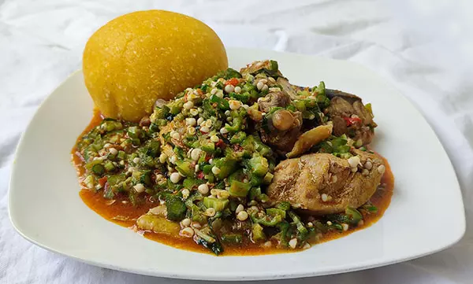

Okro soup
Description
Okra Soup is one of the quickest and easiest Nigerian soups to prepare. Some folks may argue that a lot of work goes to the cutting of the two vegetables used in preparing this recipe. Yes but once the vegetables are ready; it cooks in no time at all.
Ingredients
- 5 cups (250g) Okro
- 3 cooking spoons red palm oil
- Beef: Best cut
- Shaki (Cow Tripe)
- Fish: Iced Fish (Mackerel/Titus), Dry Fish, Stock Fish
- 1 handful crayfish
- Pepper and Salt (to taste)
- Onions (optional)
- Vegetable: Nigerian pumpkin leaves or spinach (fresh or frozen)
- 3 stock/boullion cubes
- Water, as needed
- 2 table spoons of locust beans
- 2 medium smoked fish
- Smoked prawns (optional)
Before you begin cooking
- About two hours before preparing the soup, boil the stockfish for 20 minutes and leave in the pot with the hot water to soak. There's a type of stockfish that I buy in Nigeria that does not need all that soaking.
- Cut the okra fingers into tiny pieces. The tinier you cut the okra, the more it will draw. To achieve this, you need to make a few vertical cuts followed by horizontal cuts on the okra fingers
- Grind the crayfish and the dry pepper.
- Wash the pumpkin leaves, if it is your choice of vegetable, and cut into tiny pieces. If you will use frozen spinach, defrost and cut into tiny pieces.
Cooking Directions
- If you will use shaki (cow tripe) for the soup, wash and boil till it is done. Add water sparingly because this soup needs to be thick. Add the soaked stockfish and dry fish to the cooked shaki. The length of time it will take to cook shaki depends on the cooking appliance utilized. You can take a bite to confirm this.
- When you are happy that the shaki and stock fish are well-done, add the beef, onions and stock cubes and cook till done. Then add the iced fish and cook till done.
- Pour red palm oil in another pot and heat the pot to dissolve the oil if it is congealed. Add the diced okra and start frying to kick-start the drawing process, add some meat stock from time to time till you notice the okra start to draw. This process should take a maximum of 5 mins to avoid over-cooking the okra.
- Now add the vegetable and stir well. Add all the meat and fish, crayfish, pepper and salt to taste. Then stir well.
- Cover the cooking pot and leave to simmer and it is ready to be served.
Notes
Shaki (Cow Tripe), Meat, Dry Fish, Iced Fish (Mackerel/Titus) and Stock Fish must not all be used at the same time in preparing the okra soup recipe. If you can, by all means use all as they will add to the flavour. But if not, an okra soup prepared with only iced fish ((Mackerel/Titus) can equally taste good. So don't go and break the bank because of a pot of soup!